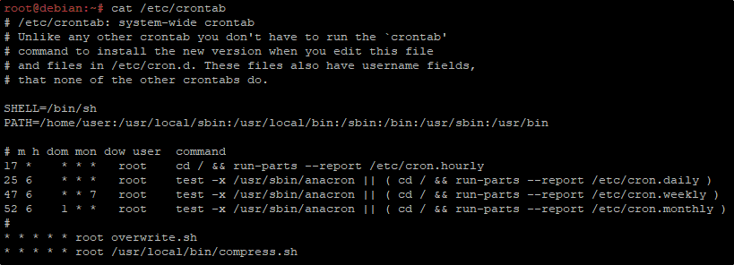

Scheduled tasks are known as Cron Jobs
We can check for them in a Cron Table or Cron Task
We can check for Cron Table in:
cat /etc/crontab
Legend:
m = minutes
h = hours
dom = days of month
mon = month
dow = day of week (e.G. 7 = sunday)
All to indicate when to run.
The first line is: at every 17th minutes, do this
The second line is: at 6:25 AM, every day, do this
The third line is: at 6:47, at 7th day of week (Every Sunday only), do this
The forth line is: at 6:52, every 1st of the month, do this
The all asterisks mean: every single minute, do this

YOU HAVE TO BE CAREFUL (EXPECIALLY IN CTF) TO THINGS THAT RUN EVERY 1MIN OR 5 MIN.
Especially if it is something running as root.
What if we can edit overwrite.sh or compress.sh?
They will be executed as a root (reverse shells!!!